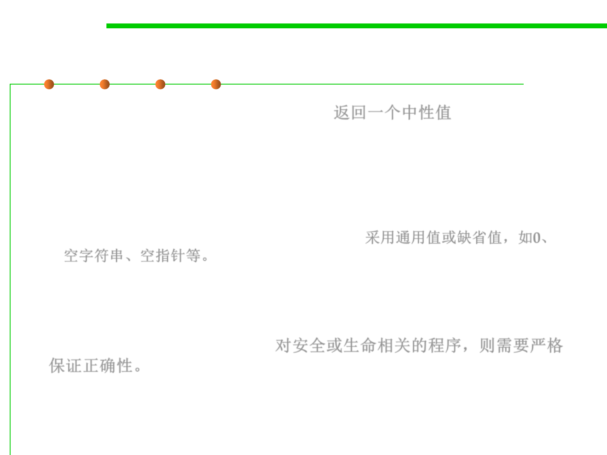

(1) Return a neutral value
7.2 Error and Exception Handling
▪ Return a neutral value (Robustness) 返回一个中性值
– Sometimes the best response to bad data is to continue operating and
simply return a value that’s known to be harmless.
– E.g., A numeric computation might return 0. A string operation might
return an empty string, or a pointer operation might return an empty
pointer. A drawing routine that gets a bad input value for color might use
the default background or foreground color. 采用通用值或缺省值，如0、
空字符串、空指针等。
▪ However, for a drawing program that shows a patient‘s X-ray film,
it is best not to display a neutral value. In this case, it’s better to
close the program than to show the wrong patient data.
(Correctness, not robustness) 对安全或生命相关的程序，则需要严格
保证正确性。